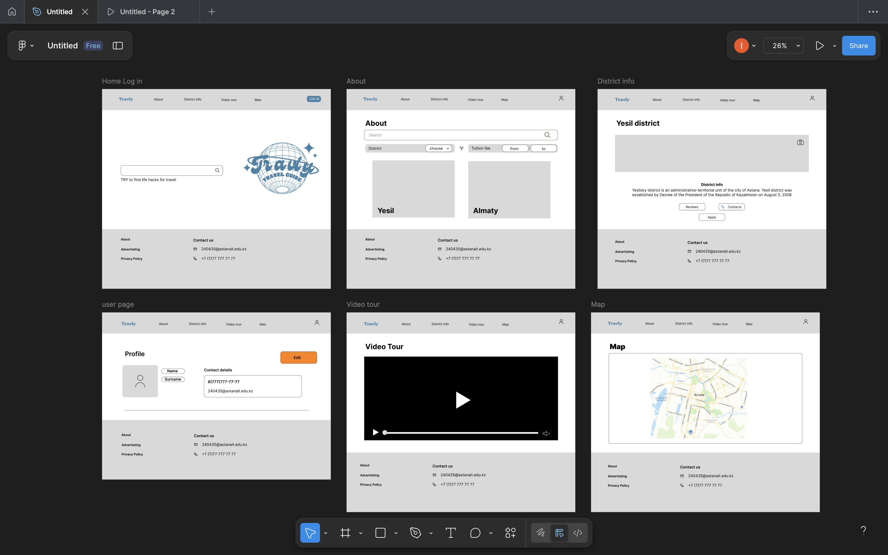

My midterm project "Travly"

I have just made an approximate design of my future website for the midterm. The website will be about the districts of Astana city. You can create your own account and search for areas. There will also be an opportunity to look at the city map. I really hope it's possible to do this, and I didn't take much for this assignment.